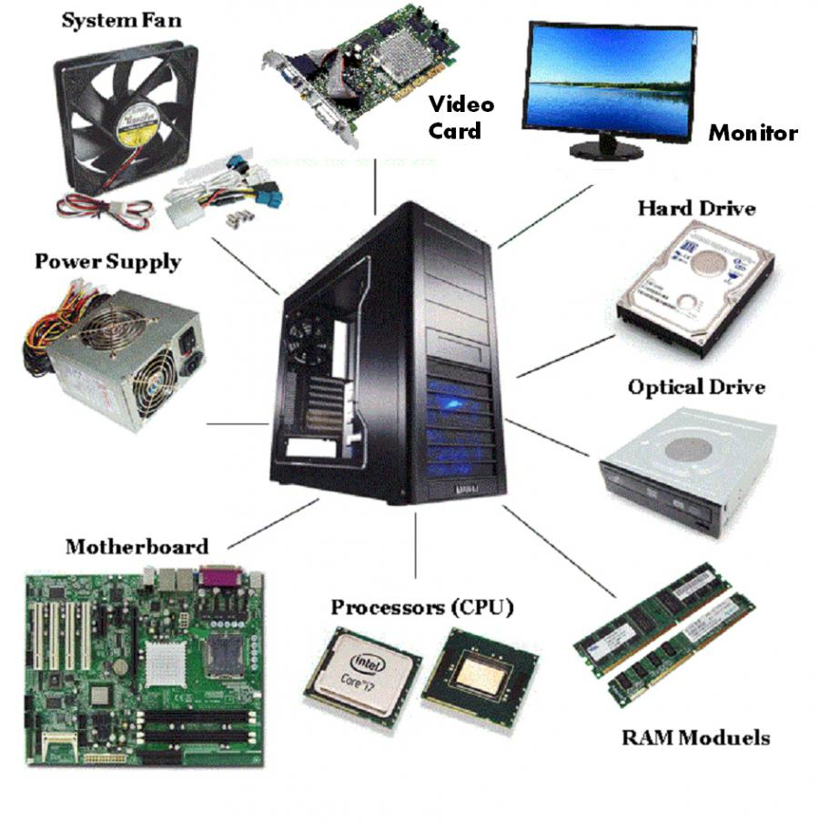

Teknologi Informasi
KELOMPOK 1
Gani Anta Arifani
Razaq Himawan
Teknologi Informasi
Teknologi informasi adalah payung besar yang mencakup semua
teknologi yang membantu manusia dalam membuat, mengubah, menyimpan,
mengomunikasikan, dan menyebarkan informasi.
TI mencakup berbagai teknologi, seperti:
Komputer
Jaringan
Perangkat lunak
Perangkat keras
TI digunakan berbagai bidang, seperti:
Bisnis
Pendidikan
Kesehatan
Pemerintahan
Ini adalah contoh teknologi informasi.
Excalidraw adalah perangkat lunak berbasis web untuk membuat
diagram dengan gaya gambar tangan. Dengan kata lain,
ini adalah alat bantu gambar digital yang dirancang khusus untuk
membuat diagram dengan estetika yang tidak terlalu formal dan
lebih mirip dengan sketsa manual.
Hardware

Berikut adalah contoh contoh hardware:
CPU
RAM
Motherboard
Dan lainnya
Informasi
Informasi adalah sekumpulan data atau fakta yang diolah dan diproses
menjadi sesuatu yang bermakna dan bermanfaat bagi penerimanya.
Informasi dapat berupa fakta, angka, gambar, suara, atau video.
Contoh: laporan penjualan, grafik tren pasar. bahkan banyak juga
video informasi yang ada di youtube
Informasi dapat digunakan untuk membuat keputusan, memecahkan
masalah, dan belajar.
Informasi Berkualitas
Akurat
Tepat Waktu
Relevan
Lengkap
Ciri -ciri informasi yang berkualitas menurut Mc. Leod (1997) ada
empat, yaitu:
Akurat, artinya informasi tersebut mencerminkan keadaan yang
sebenarnya.
Tepat waktu, artinya informasi harus tersedia atau ada saat
diperlukan.
Relevan, artinya informasi yang diberikan harus sesuai yang
dibutuhkan.
Lengkap, artinya informasi harus diberikan secara utuh tidak
setengah-setengah.
Terima Kasih
Teknologi informasi adalah alat yang penting untuk individu dan
organisasi.
TI dapat membantu kita untuk menyelesaikan pekerjaan lebih cepat
dan mudah, berkomunikasi dengan orang lain, dan belajar.
Penting untuk memilih teknologi yang tepat untuk kebutuhan Anda
dan untuk menggunakan informasi dengan cara yang bertanggung
jawab.